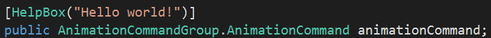
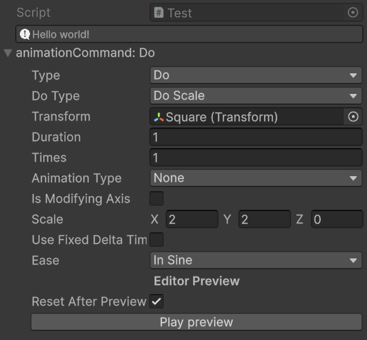

Introduzione
简介
AnimLink 是一款轻量级 Unity
动画插件，提供了直观简洁的扩展方法来执行常见的属性动画。它支持对
Transform 的位移、旋转、缩放，以及对 UI
或渲染组件的透明度、颜色等属性进行缓动操作。使用
AnimLink
无需复杂配置，只需在脚本中调用相应的扩展方法（如
DoPosition、DoScale、DoAlpha等），即可实现平滑动画效果。AnimLink
内置多种缓动类型(Ease)和动画循环方式，并支持将多个动画组合成序列执行。
另外，AnimLink
还附带了一些其他功能，如可视化面板，允许用户直观地创建和编辑动画序列。
本插件特点：协程驱动、简洁易用、高可定制、轻量级。
AnimLink è un plugin di animazione leggero per Unity
che offre metodi di estensione intuitivi e concisi per eseguire le
animazioni delle proprietà più comuni. Supporta il tweening di
spostamento, rotazione e ridimensionamento del
Transform, nonché la trasparenza, il colore e altre
proprietà degli elementi UI o dei componenti di rendering. Con
AnimLink non è necessaria alcuna configurazione
complessa: basta invocare nel codice i metodi di estensione
corrispondenti (ad esempio DoPosition,
DoScale, DoAlpha ecc.) per ottenere
animazioni fluide. AnimLink include diversi tipi di
easing (Ease) e modalità di loop, e supporta la
composizione di più animazioni in sequenza. Inoltre,
AnimLink include anche alcune funzionalità
aggiuntive, come un pannello visivo che consente agli utenti di
creare e modificare sequenze di animazione in modo intuitivo.
Caratteristiche di questo plugin: basato su coroutine, semplice
e facile da usare, altamente personalizzabile e leggero.
快速上手
-
下载插件：AnimLink V.1.0.0
注：为了可以使用预览模式，请在 Unity Package Manager 中搜索并安装EditorCoroutine。 - 在Unity项目中导入
AnimLink插件。 -
在需要使用动画的
GameObject 上添加一个脚本，并编写如下代码：
using UnityEngine; using AnimLink; // 在脚本中使用 AnimLink 前，需要先引用 AnimLink 命名空间。 public class HelloWorld : MonoBehaviour { public CanvasGroup canvasGroup; void Start() { // 移动：将物体沿 X 轴移动到目标位置 3f, 持续 2 秒 transform.DoPosition(Axis.X, 3f, 2f, 1, Base_AnimType.None, Ease.Linear).Play(); // 缩放：将物体局部缩放到 (2,2,2)，持续 2 秒 transform.DoScale(new Vector3(2f, 2f, 2f), 2f, 1, Base_AnimType.None, Ease.Linear) .Play(); // 透明度：将 UI CanvasGroup 的透明度变为 0(完全透明), 持续 1 秒 canvasGroup.DoAlpha(0f, 1f, 1, ValueAnimType.None, Ease.Linear).Play(); } }
在以上示例中，transform.DoPosition 相当于对
transform.position 属性进行插值修改
，从而使物体平滑移动； transform.DoScale 修改
transform.localScale;
canvasGroup.DoAlpha 则修改
CanvasGroup
的 alpha 属性 (CanvasGroup
常用于同时控制一组 UI 元素的透明度)
。通过这种方式，你可以很方便地在代码中为游戏对象添加动画效果。
✅ 提示： 想了解更多用法？看看
AnimLink/RunTime/Examples 文件夹中的示例吧！
Inizio veloce
-
Scarica il plugin:
AnimLink V.1.0.0
Nota: per poter utilizzare la modalità anteprima, cerca e installaEditorCoroutinenel Unity Package Manager -
Importa il plugin
AnimLinknel tuo progetto Unity. -
Aggiungi uno script al GameObject su cui vuoi applicare
l'animazione e scrivi:
using UnityEngine; using AnimLink; // Prima di usare AnimLink nello script, è necessario importare il namespace AnimLink. public class HelloWorld : MonoBehaviour { public CanvasGroup canvasGroup; void Start() { // Movimento: sposta l'oggetto lungo l'asse X fino alla posizione 3f, in 2 secondi transform.DoPosition(Axis.X, 3f, 2f, 1, Base_AnimType.None, Ease.Linear).Play(); // Scala: scala l'oggetto localmente a (2,2,2), in 2 secondi transform.DoScale(new Vector3(2f, 2f, 2f), 2f, 1, Base_AnimType.None, Ease.Linear) .Play(); // Trasparenza: cambia l'opacità del CanvasGroup UI a 0 (completamente trasparente), in 1 secondo canvasGroup.DoAlpha(0f, 1f, 1, ValueAnimType.None, Ease.Linear).Play(); } }
Nell'esempio sopra, transform.DoPosition equivale a
modificare transform.position tramite
interpolazione, ottenendo così un movimento fluido;
transform.DoScale modifica
transform.localScale;
canvasGroup.DoAlpha invece modifica la proprietà
alpha di CanvasGroup (CanvasGroup
viene comunemente usato per controllare collettivamente
l'opacità di più elementi UI). In questo modo puoi facilmente
aggiungere animazioni agli oggetti direttamente dal codice.
✅ Suggerimento: Vuoi saperne di più? Dai
un'occhiata agli esempi nella cartella
AnimLink/RunTime/Examples!
🎬 可视化面板使用说明
为了提升动画配置的效率与可视化体验，AnimLink 插件
内置了一套自定义的 Editor 脚本系统，可在 Unity
的 Inspector 中直观编辑动画命令。
下方将展示可视化面板和操作流程，以及其它功能。
🔹AnimationCommandGroup 组件
AnimationCommandGroup是AnimLink的核心组件之一，用于集中管理多个动画命令。
每条命令控制一个动画行为，如位置移动、透明度渐变、颜色变换等。对应的AnimationCommandGroupPropertyDrawer属性绘制器会在
Inspector
中以列表形式显示动画命令序列。
在使用时，你只需将
AnimationCommandGroup 添加到场景对象上， 即可通过
Inspector
面板可视化地添加、编辑、删除每一条动画指令。
每条命令都允许设置动画类型(如
DoPosition、DoAlpha)、目标值、持续时间、缓动方式、循环模式等参数,
并可点击播放按钮直接预览当前命令的动画效果。
此外，每组动画命令可以统一设置播放方式，比如一起播放还是一个接一个地播放。
这样可以快速制作复杂的动画效果，不用写任何动画代码，大大提高开发效率。
🎥 示例视频：添加、配置并使用动画命令组
🔹AnimationCommand 组件
如果你只需要编辑一个动画效果，可以直接使用
AnimationCommand 组件，它用于表示单个动画命令。
每条命令都包含动画类型（如位置、缩放、透明度等）、目标值、持续时间、缓动方式、循环模式等参数。
它在 Inspector 面板中可以通过
AnimationCommandPropertyDrawer
自定义绘制器直观编辑， 允许你无需编写任何代码即可完成动画配置。
🎥 示例视频: 使用AnimationCommand
🔹额外功能
插件还内置了多个辅助功能，可用于提升编辑体验：
-
HelpBoxAttribute: 在 Inspector 中显示提示说明。
代码示例：

效果示例：
 -
FunctionPlus组件: 借鉴了 UnityEvent 在 Inspector 中的表现形式和设计理念，但做出了更适合本插件的优化与增强，实现了更灵活的函数调用配置。FunctionPlus支持多种类型的函数调用，包括：int、float、string、List<T>(T 为支持的基础类型)、Vector3和Quaternion等。 但需要注意的是，仅支持返回类型为void或IEnumerator的函数。🎥 示例视频: FunctionPlus使用方法
✅ 提示：
FunctionPlus组件 能在AnimationCommandGroup组件中使用，不能在AnimationCommand组件中使用。
🎬 Istruzioni per l'uso del Pannello Visuale
Per migliorare l'efficienza della configurazione delle
animazioni e l'esperienza visiva, il plugin
AnimLink include un sistema di
script personalizzati per l'Editor che permette di modificare i
comandi di animazione direttamente nell'Inspector di Unity. Di
seguito vengono mostrati il pannello visuale, il flusso
operativo e altre funzionalità.
🔹 Componente AnimationCommandGroup
AnimationCommandGroup è uno dei componenti chiave
di AnimLink, utilizzato per gestire in modo
centralizzato più comandi di animazione. Ogni comando controlla
un comportamento animato (ad esempio spostamento, transizione di
opacità, cambio colore, ecc.). Il relativo
AnimationCommandGroupPropertyDrawer disegna
nell'Inspector una lista sequenziale di
comandi.
Per usarlo, basta aggiungere il componente
AnimationCommandGroup all'oggetto di scena:
nell'Inspector potrai aggiungere, modificare e
rimuovere visivamente ogni comando animazione. Ogni commando
consente di impostare il tipo di animazione (es.
DoPosition, DoAlpha), il valore
obiettivo, la durata, il tipo di easing, la modalità di loop e
altro, e di cliccare un pulsante di anteprima per vedere in
tempo reale l'effetto.
Inoltre, ogni gruppo di comandi di animazione può essere
configurato per essere riprodotto in modo simultaneo (cioè allo
stesso tempo) o sequenziale. In questo modo è possibile creare
rapidamente effetti animati complessi senza scrivere alcun
codice di animazione, migliorando notevolmente l'efficienza
dello sviluppo.
🎥 Video di esempio: aggiunta, configurazione e utilizzo di un gruppo di comandi
🔹 Componente AnimationCommand
Se ti serve un singolo effetto animato, puoi usare direttamente
il componente AnimationCommand, che rappresenta un
singolo comando. Ogni comando include tipo di animazione
(spostamento, scala, opacità, ecc.), valore obiettivo, durata,
easing, modalità di loop e altri parametri. Nel pannello
Inspector è disegnato tramite
AnimationCommandPropertyDrawer per un editing
intuitivo, permettendoti di configurare l'animazione senza
scrivere codice.
🎥 Video di esempio: utilizzo di AnimationCommand
🔹 Funzionalità Aggiuntive
Il plugin include inoltre diversi strumenti ausiliari per migliorare l'esperienza di editing:
-
HelpBoxAttribute: mostra un messagio di suggerimento nell'Inspector.
Esempio di codice:
Esempio di effetto:
-
Componente
FunctionPlus: ispirato a UnityEvent nell'Inspector, ma ottimizzato per questo plugin, offre una configurazione più flessibile delle chiamate di funzione.FunctionPlussupporta diversi tipi di argomenti (tra cuiint,float,string,List<T>,Vector3,Quaternion), ma solo metodi con ritornovoidoIEnumerator.🎥 Video di esempio: utilizzo di FunctionPlus
✅ Suggerimento: il componente
FunctionPluspuò essere utilizzato all'interno diAnimationCommandGroupe non inAnimationCommand.
API 文档
命名空间：AnimLink
1. AnimationSequence
管理并顺序执行一系列动画命令、延迟和回调。
公共属性
public List<AnimationItem> Items { get; }：当前添加的项目列表。
公共方法
public AnimationSequence Append(IAnimationCommand command, bool wait = true)
public AnimationSequence Append(float delay, bool gameTime = true)
public AnimationSequence Append(Action action)
public AnimationSequence Append(FunctionPlus functionPlus, bool wait = false)
public AnimationSequence Insert(int index, IAnimationCommand command, bool wait = true)
public AnimationSequence Insert(int index, FunctionPlus functionPlus, bool wait = false)
public AnimationSequence Insert(int index, float delay, bool gameTime = true)
public AnimationSequence Insert(int index, Action action)
public AnimationSequence RemoveAt(int index)
public AnimationSequence Remove(IAnimationCommand command)
public AnimationSequence Remove(FunctionPlus functionPlus)
public AnimationSequence Remove(Action action)
public AnimationSequence Clear()
public void Play()
public void Stop()
说明：Append/Insert 增加命令;
Remove/RemoveAt/Clear 删除；Play() 启动，Stop()
停止。
2. AnimLinkExtension(扩展方法)
为常用组件提供链式动画接口，返回对应
IAnimationCommand 实例，支持链式配置：
| 方法 | 方法签名 | 说明 |
|---|---|---|
| DoPath |
|
沿路径移动，支持线性/Catmull-Rom/Bezier。 |
| DoPosition (轴) |
|
在指定轴方向移动。 |
| DoPosition (向量) |
|
移动到指定位置。 |
| DoScale (轴) |
|
沿指定轴进行缩放。 |
| DoScale (向量) |
|
按指定三维向量进行缩放。 |
| DoRotation |
|
旋转动画。 |
| DoAlpha |
|
透明度动画。 |
| DoColor |
|
颜色动画。 |
| ShakePosition / ShakeScale |
|
抖动动画（位置/缩放）。 |
| AdvancedShake |
|
高级抖动，支持噪声和曲线。 |
| EasedT | float EasedT(float t, Ease ease) |
根据缓动类型计算进度。 |
| CatmullRom / CubicBezier |
|
路径插值算法。 |
3. MaterialPropertyBlockExtension
扩展 MaterialPropertyBlock，支持批量清除属性：
public static MaterialPropertyBlock Clear(this MaterialPropertyBlock block, Name_ names)-
Name_是一个枚举, 用来指定你想清除的属性(Color/Texture/Float/Vector/Matrix) -
调用时，方法会删除所有你在
names中指定的那些属性，并返回一个新的MaterialPropertyBlock实例。
4. UtilityExtension(通用工具)
包含序列导出、反射访问[internal]、枚举扩展、列表/数组转换、编辑器路径处理[internal]等方法：
导出 AnimationSequence
ExportAnimationSequence(this AnimationCommand[] settings): AnimationSequenceExportAnimationSequence(this List<AnimationCommand> settings): AnimationSequenceExportAnimationSequence(this AnimationCommandGroup animationCommandGroup): AnimationSequence
导出 IAnimationCommand
ExportAnimation(this AnimationCommand setting): IAnimationCommand枚举扩展
HasMultipleFlags(this Enum @enum, bool allowZero = false): bool
GetFlags<T>(this T enumValue) where T : Enum : IEnumerable<T>反射获取实例 [internal]
GetObjectInstanceByReflection(string path, object obj): object类型转换
ConvertListType(this IList, Type targetListType): object
ConvertArrayType(this Array, Type targetArrayType): object编辑器路径字符串处理(仅 UnityEditor [internal])
ReplaceLastArrayDataOccurrence(this string path): string
EndsWithArrayDataIndex(this string path): bool
GetLastArrayDataIndex(this string path): int
ReplaceLastArrayDataIndex(this string path, int newIndex): string5. AnimationCommand & AnimationCommandGroup (可视化面板)
AnimationCommand 表示一个动画命令，调用
ExportAnimation() 可以把它转换成一个
IAnimationCommand 实例。
AnimationCommandGroup 用来存放多条
AnimationCommand，并提供
ExportAnimationSequence() 方法，将它们导出为一个
AnimationSequence，方便播放。
7. 枚举类型
| 枚举 | 说明 |
|---|---|
Ease |
Linear、Sine、Quad、Cubic、Quart、Quint、Expo、Circ、Back、Elastic、Bounce 等多种缓动选项 |
Base_AnimType |
None, PingPong, Increment |
ValueAnimType |
None, PingPong, Increment, Decrement |
Axis |
None, X, Y, Z(可按位组合) |
8. IAnimationCommand 接口
所有动画命令的接口。
公共属性
-
float Duration { get; }：动画的持续时间（秒）。 int Times { get; }：动画的循环次数。-
float ReturnDuration { get; }：动画的返回时长（主要供AdvancedShake使用）。 -
bool IsPlaying { get; }：当前动画是否正在播放。 -
UnityEngine.Object TargetObject { get; }：动画作用的目标对象。
公共方法
bool IsPlaying { get; }
// 开始播放动画，返回自身以便链式调用
public IAnimationCommand Play();
// 停止动画
public IAnimationCommand Stop();
// 重新开始播放（在 Stop 之后调用）
public void Resume();
// 动画完成时调用 onComplete 回调
public IAnimationCommand AddOnComplete(Action action);
// 移除已注册的回调
public IAnimationCommand RemoveOnComplete(Action action);9. FunctionPlus(可视化面板)
提供通过可视化界面动态调用方法的功能，支持参数配置和协程方法的调用。
公共属性
-
bool IsIEnumerator { get; }：指示当前选中的方法是否为协程方法（返回类型为 `IEnumerator`）。 -
bool IsMissing { get; }：指示当前选中的方法是否已丢失（如方法被删除或重命名）。
公共方法
// 执行当前选中的方法。
public void InvokeMethod()
//获取当前方法的迭代器，用于协程调用(如 StartCoroutine)
public IEnumerator GetIEnumerator()Documentazione API
namespace:AnimLink
1. AnimationSequence
Gestisce ed esegue in sequenza una serie di comandi di animazione, ritardi e callback.
Proprietà pubbliche
public List<AnimationItem> Items { get; }:
lista degli elementi aggiunti.
Metodi pubblici
public AnimationSequence Append(IAnimationCommand command, bool wait = true)
public AnimationSequence Append(float delay, bool gameTime = true)
public AnimationSequence Append(Action action)
public AnimationSequence Append(FunctionPlus functionPlus, bool wait = false)
public AnimationSequence Insert(int index, IAnimationCommand command, bool wait = true)
public AnimationSequence Insert(int index, FunctionPlus functionPlus, bool wait = false)
public AnimationSequence Insert(int index, float delay, bool gameTime = true)
public AnimationSequence Insert(int index, Action action)
public AnimationSequence RemoveAt(int index)
public AnimationSequence Remove(IAnimationCommand command)
public AnimationSequence Remove(FunctionPlus functionPlus)
public AnimationSequence Remove(Action action)
public AnimationSequence Clear()
public void Play()
public void Stop()
Note: Append/Insert aggiungono comandi;
Remove/RemoveAt/Clear li rimuovono; Play() avvia
l'animazione, Stop() la ferma.
2. AnimLinkExtension (metodi di estensione)
Fornisce un'interfaccia animata a catena per i componenti
comuni, restituendo un'istanza di
IAnimationCommand, con supporto alla configurazione
a catena.
| Metodo | Firma del metodo | Descrizione |
|---|---|---|
| DoPath |
|
Sposta lungo un percorso, supporta Lineare / Catmull-Rom / Bézier. |
| DoPosition (Asse) |
|
Sposta lungo un asse specifico. |
| DoPosition (Vettore) |
|
Sposta verso una posizione specifica. |
| DoScale (Asse) |
|
Scala lungo l'asse specificato. |
| DoScale (Vettore) |
|
Scala secondo il vettore 3D specificato. |
| DoRotation |
|
Animazione di rotazione. |
| DoAlpha |
|
Animazione di trasparenza. |
| DoColor |
|
Animazione di colore. |
| ShakePosition / ShakeScale |
|
Animazione a scossa (posizione / scala). |
| AdvancedShake |
|
Scossa avanzata, supporta rumore e curve. |
| EasedT | float EasedT(float t, Ease ease) |
Calcola il progresso in base al tipo di easing. |
| CatmullRom / CubicBezier |
|
Algoritmi di interpolazione del percorso. |
3. MaterialPropertyBlockExtension
Estende MaterialPropertyBlock per supportare la
cancellazione in blocco delle proprietà:
public static MaterialPropertyBlock Clear(this MaterialPropertyBlock block, Name_ names) -
Name_è una enum che specifica quali proprietà (Color/Texture/Float/Vector/Matrix) cancellare. -
Il metodo rimuove tutte le proprietà specificate in
namese restituisce una nuova istanza diMaterialPropertyBlock.
4. UtilityExtension (Utilità generiche)
Contiene metodi per esportare sequenze, accesso riflessivo [internal], estensioni enum, conversioni lista/array, elaborazione di path editor [internal]:
Esportare AnimationSequence
ExportAnimationSequence(this AnimationCommand[] settings): AnimationSequence
ExportAnimationSequence(this List<AnimationCommand> settings): AnimationSequence
ExportAnimationSequence(this AnimationCommandGroup animationCommandGroup): AnimationSequenceEsportare IAnimationCommand
ExportAnimation(this AnimationCommand setting): IAnimationCommandEstensioni Enum
HasMultipleFlags(this Enum @enum, bool allowZero = false): bool
GetFlags<T>(this T enumValue) where T : Enum : IEnumerable<T> Ottenere l'istanza tramite riflessione [internal]
GetObjectInstanceByReflection(string path, object obj): objectConversioni di tipo
ConvertListType(this IList, Type targetListType): object
ConvertArrayType(this Array, Type targetArrayType): objectGestione stringhe di percorso in Editor (solo UnityEditor [internal])
ReplaceLastArrayDataOccurrence(this string path): string
EndsWithArrayDataIndex(this string path): bool
GetLastArrayDataIndex(this string path): int
ReplaceLastArrayDataIndex(this string path, int newIndex): string5. AnimationCommand & AnimationCommandGroup (Pannello visivo)
AnimationCommand rappresenta un comando di
animazione. È possibile convertirlo in un'istanza
IAnimationCommand tramite
ExportAnimation().
AnimationCommandGroup contiene più
AnimationCommand e fornisce il metodo
ExportAnimationSequence() per esportarli come una
AnimationSequence da riprodurre.
7. Tipi Enum
| Enum | Descrizione |
|---|---|
Ease |
Opzioni di easing come Linear, Sine, Quad, Cubic, Quart, Quint, Expo, Circ, Back, Elastic, Bounce, ecc. |
Base_AnimType |
None, PingPong, Increment |
ValueAnimType |
None, PingPong, Increment, Decrement |
Axis |
None, X, Y, Z (combinabili con flag) |
8. Interfaccia IAnimationCommand
Interfaccia per tutti i comandi di animazione.
Proprietà pubbliche
-
float Duration { get; }: durata dell'animazione (secondi). -
int Times { get; }: numero di ripetizioni dell'animazione. -
float ReturnDuration { get; }: durata di ritorno (usata principalmente daAdvancedShake). -
bool IsPlaying { get; }: indica se l'animazione è attualmente in esecuzione. -
UnityEngine.Object TargetObject { get; }: oggetto target dell'animazione.
Metodi pubblici
// Avvia l'animazione e restituisce se stesso per chaining
public IAnimationCommand Play();
// Ferma l'animazione
public IAnimationCommand Stop();
// Riprende l'animazione (dopo uno Stop)
public void Resume();
// Registra un callback da eseguire al termine
public IAnimationCommand AddOnComplete(Action action);
// Rimuove un callback precedentemente registrato
public IAnimationCommand RemoveOnComplete(Action action);
9. FunctionPlus (Pannello Visivo)
Fornisce la funzionalità per invocare metodi dinamicamente tramite un'interfaccia visiva, supportando la configurazione dei parametri e l'invocazione di metodi coroutine.
Proprietà Pubbliche
-
bool IsIEnumerator { get; }: Indica se il metodo selezionato è una coroutine (cioè restituisceIEnumerator). -
bool IsMissing { get; }: Indica se il metodo selezionato è mancante (ad esempio, se è stato eliminato o rinominato).
Metodi Pubblici
// Esegue il metodo attualmente selezionato.
public void InvokeMethod()
// Ottiene l'iteratore del metodo corrente, utile per le coroutine (es. StartCoroutine)
public IEnumerator GetIEnumerator()404
页面未找到
Pagina non trovata
→返回简介 →Torna all'introduzione